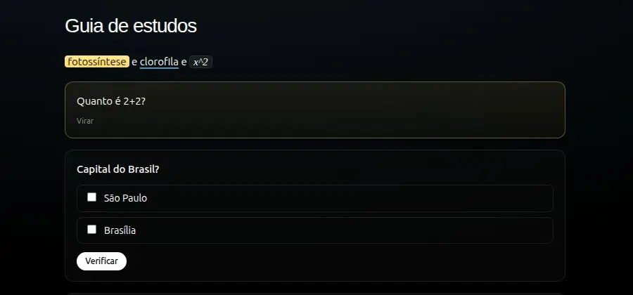
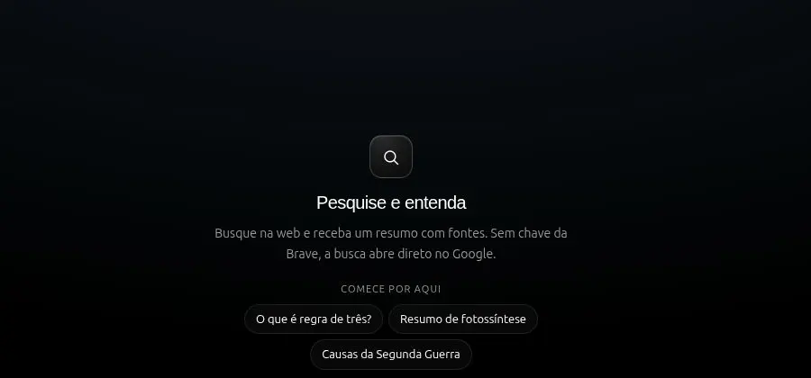
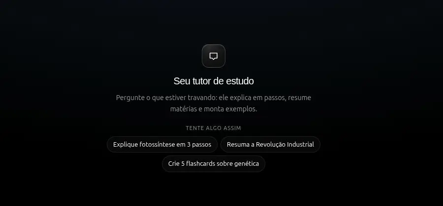
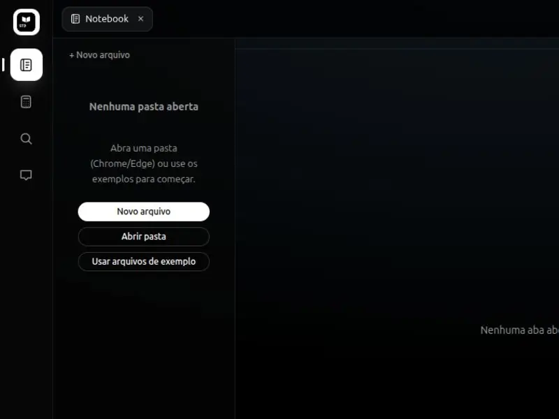
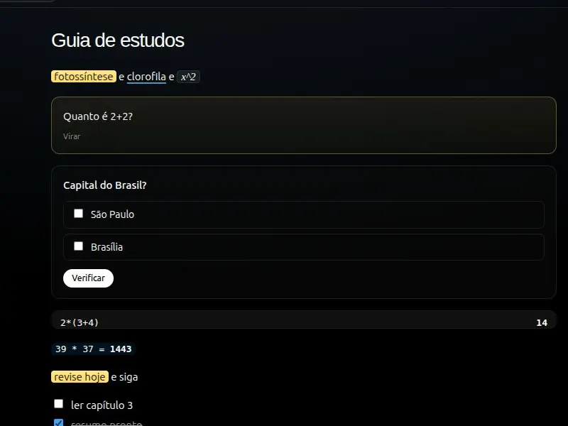

Anote com superpoderes
Markdown com marca-texto, flashcards que viram, quiz com correção, cálculos ao vivo e desenho à caneta — tudo no mesmo arquivo.
v0.1.0 — agora também no navegador
Notebook .stmd com flashcards e quiz, calculadora científica, pesquisa, tutor e pastas locais. Privado por padrão — e funcionando offline.
Projeto de Deividy Oliveira Krenciglova · Colégio Estadual Barbosa Ferraz
Sobre o STDHub
O STDHub nasceu como app desktop e agora roda direto no navegador. Você abre, escreve e fecha: os arquivos ficam na sua máquina, não numa conta.
Um arquivo .stmd continua sendo Markdown — só que com flashcards que
viram, quiz corrigido na hora, cálculos ao vivo e desenho à caneta dentro dele.
Um app, seis tarefas do dia a dia de estudante resolvidas.

Markdown com marca-texto, flashcards que viram, quiz com correção, cálculos ao vivo e desenho à caneta — tudo no mesmo arquivo.

Científica, com histórico e porcentagem. Entende raiz de 9, √ e copia o resultado em um clique.

Pesquise no Google numa nova aba ou receba resultados com resumo por IA dentro do app, quando você configurar sua chave.

Assistente de estudos com a sua chave de API. Sem rede, o resto do app continua funcionando normalmente.

Abra uma pasta no Chrome ou Edge, ou use os arquivos de exemplo. Nada é enviado para servidor nenhum.
Sem cadastro, sem rastreio de estudo. Só você e os seus arquivos — com o tema claro ou escuro que preferir.
O que vem dentro
Sem instalar extensão, sem trocar de janela. Os recursos aparecem onde você está escrevendo.
Começar agora2*(3+4) vira 14 no textoComo funciona
Modo visitante entra direto, sem conta e sem senha. O tour guiado mostra cada controle no lugar real.
No Chrome ou Edge você escolhe uma pasta do computador. Se preferir, comece pelos arquivos de exemplo.

Os arquivos ficam com você. A chave de IA, se você usar, fica guardada só no seu navegador.

O STDHub junta o que normalmente ficaria em três apps separados.
Deslize a tabela para o lado →
| Recurso | STDHub | Bloco de notas | Editores de código |
|---|---|---|---|
| Flashcards e quiz no arquivo | Sim | Não | Não |
| Calculadora embutida | Sim | Não | Não |
| Tutor com IA | Sim | Não | Não |
| Funciona offline | Sim | Sim | Sim |
| Privado por padrão | Sim | Varia | Sim |
| Tour guiado na interface | Sim | Não | Não |
Não. Notebook, calculadora, arquivos e desenho funcionam offline; só a IA (tutor e resumos) precisa de rede e da sua chave de API.
Não. O modo visitante entra direto e nada sai da sua máquina. Não existe login, senha ou painel na nuvem.
É um Markdown com superpoderes de estudo: flashcards, quiz, cálculos e desenho. Continua abrindo em qualquer editor de texto.
Sim, o layout se adapta. Para instalar como app no Android, use o APK do release no GitHub.
A chave fica no armazenamento do próprio navegador e os arquivos na pasta que você escolher. Nenhum dos dois passa por um servidor do STDHub.
Vamos começar
Sem conta, sem instalação, sem mensalidade.